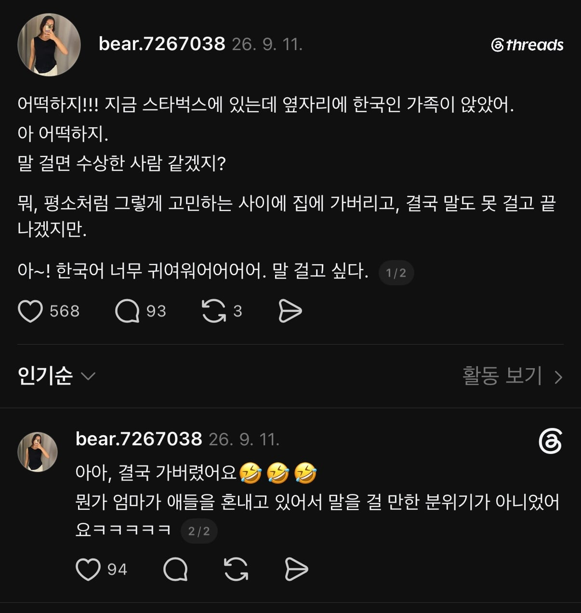
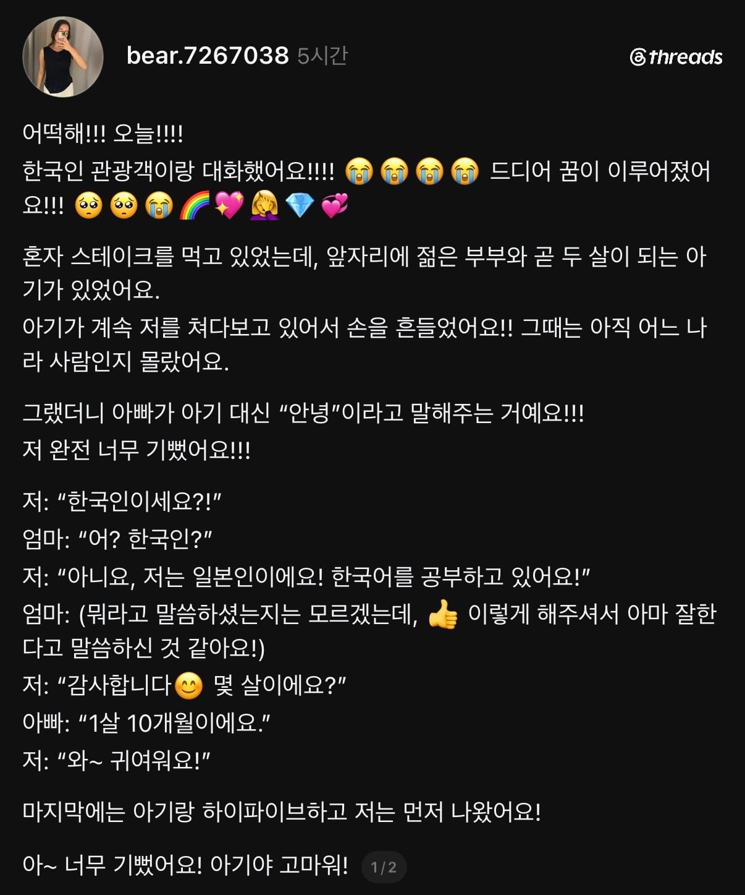
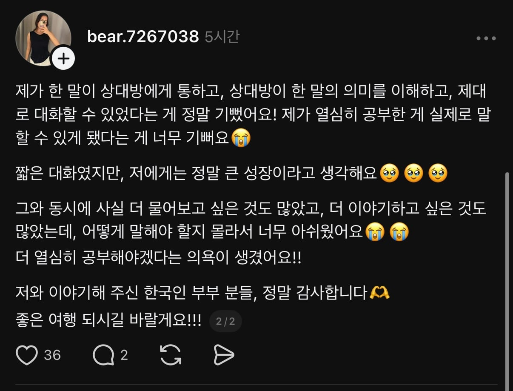

꿈이 그런거라면 내가 말을 걸어줘야겠군



꿈이 그런거라면 내가 말을 걸어줘야겠군
ㅈㄴ 상냥할꺼같아
글만봐도 한국어 개잘하는거 느껴짐
하지만 내가 말을 건다면?
ㅋㅋㅋㅋㅋㅋ 아 ㅈㄴ웃겼네
중국어로 알아들을거임
한국어 공부를 포기하게 할셈인가!
한국어 학습의 최대 고비 출동ㄷㄷ
혐한 제조기 ON
급격히 네이티브화가 되는 시발
팅부동!!
すみません、中国語は話せません
코노야로

인간 진입장벽

함께 소주 마실래?
아 너무 좋다. 배움과 새로운 경험으로 행복한 삶이라니...
메탈공연보러 일본갔을때
한국인이라고 어눌한 한국어로 말걸어주던 메탈팬들 생각난다
겨울연가 끝난지 20년이 넘었는데도 "제 최고의 드라마는 겨울연가에요"하길래 식겁함
외국인이랑 외국어로 어느정도 티키타카가 되면 ㅈㄴ 신기하긴함 ㅋㅋ
이게 어느정도 현지인이랑 대화되네? 라는 느낌 들면 혼자 여행하고 싶어서 안달난다..
와타시 캉코쿠진!! 오사케 노무~?
나도 일본가서 일본어 기본적인것만 대충알았는데 어떻게 이야기 해보니깐 잘 통하고 재밌더라 한국이랑 일본이 친해졌으면 좋겠다던 할아버지 아직도 기억남
일본에서 간사이지방 회사때문에 3년정도 살았는데 남녀노소 상관없이 호의적이였음
오히려 재일 어르신들이 좀 공격적이였고
하시는 말 들어보면 우린 차별받았는데 너흰 왜 환영 받냐는거임
좆같은데 또 안타깝기도 하네;
오이 오마에와 오토코다
정화된다